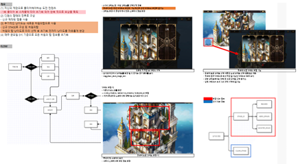

픽업 스토리 콘텐츠
- 신규 캐릭터 전용 기간 한정 스토리
- 서사 체험과 캐릭터 수집 동기 연결
04 · TURN-BASED SRPG
캐릭터 서사와 수집 동기를 연결하는 픽업 콘텐츠, 경쟁형 보스 레이드, 성장 단계에 따라 선택할 수 있는 일일 던전을 기획했습니다.

고정 난이도 던전은 라이트 유저에게 진입 장벽이 되고, 성장한 유저에게는 도전 동기가 약해질 수 있습니다. 유저가 직접 난이도를 선택하고 난이도에 따라 보상이 달라지는 일일 초기화 던전을 설계했습니다.

유저가 현재 성장 수준에 맞는 도전을 선택하고, 다음 난이도와 보상을 성장 목표로 삼을 수 있게 하는 것이 목표였습니다.